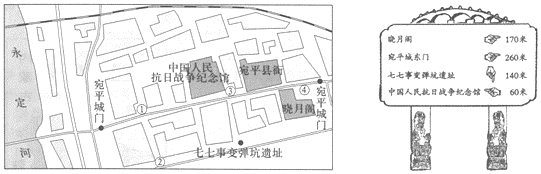
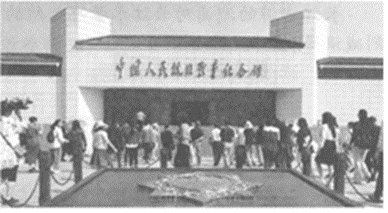
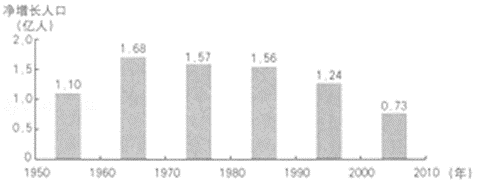

2018年北京市中考地理真题 · 选择题 第6、7、8、9、10题

北京某中学组织学生参观中国人民抗日战争纪念馆。如图为纪念馆周边地区示意图及学校地理小组绘制的指示牌。据此，完成3～6题。
6.下图为某同学在纪念馆正门拍摄的照片。据图判断当时的天气是（ ）ABCD
“天下地土，南北高下相半。且以江淮南北论之：江淮以北，高田平旷，所种宜黍稷等稼；江淮以南，下土涂泥，所种宜稻秫。又南北渐远，寒暖殊别，故所种早晚不同……”（引自《王祯农书﹒地利篇》）。据此，完成7，8题。
7.“江淮以北”和“江淮以南”泛指我国的（ ）
A.北方地区和南方地区B.高原地区和平原地区
C.青藏地区和西北地区D.人口稠密区和稀疏区
8.反映我国东部地区南北差异的是（ ）
A.江淮以南，土地广阔平坦B.江淮以北水田广布，种植水稻
C.江淮以北，河流纵横交错D.南北距离越远，热量差异越大

如图为我国1950﹣2010年每十年人口净增长统计图。据此，完成9～11题。9.1950﹣2010年，我国人口数量（ ）
A.总体呈增长趋势B.每十年净增均在1亿以上
C.总体呈减少趋势D.每十年净增均在1亿以下
10.1990年以后人口净增长明显下降的主要原因是（ ）
A.计划生育政策的实施B.医疗设施的完善
C.基础设施水平的提高D.养老事业的发展